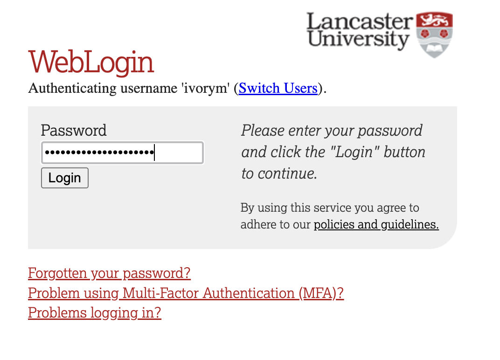
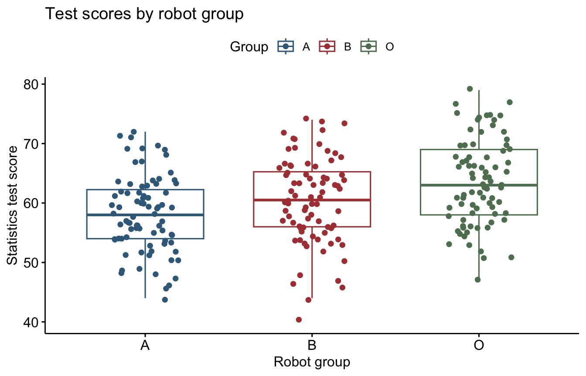
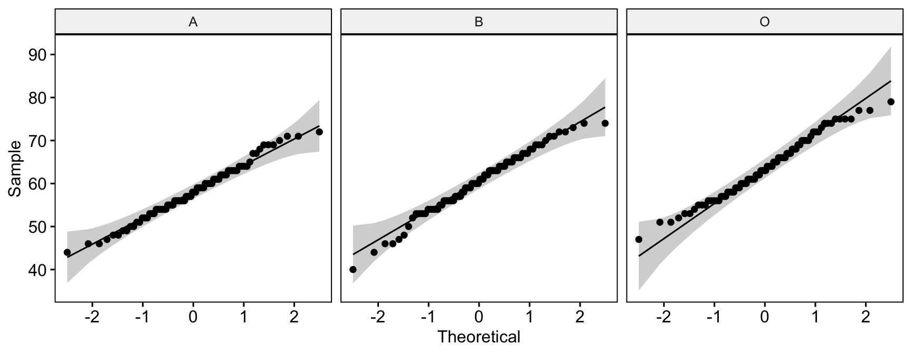
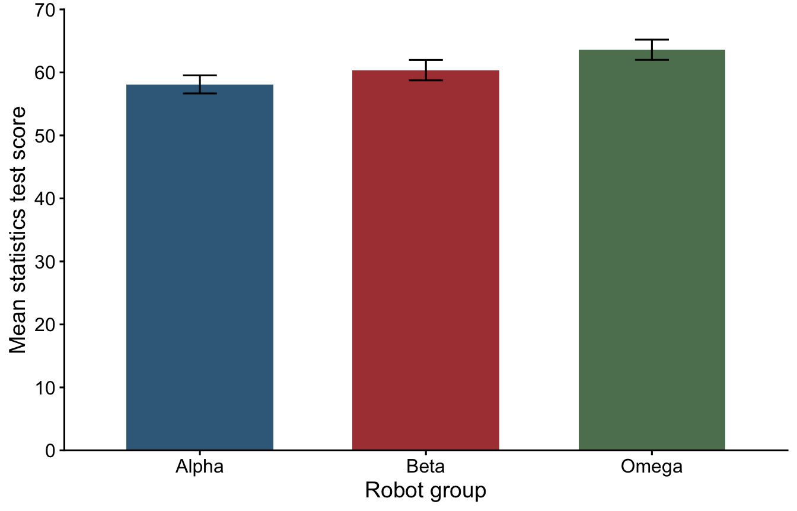

library(tidyverse) # Import, organise and plot data
library(rstatix) # Descriptives, assumption checks and follow-up tests
library(ggpubr) # Box plots and Q–Q plots
library(effectsize) # Effect sizes and their confidence intervals2. Single-Factor Between-Participants ANOVA
Mark Hurlstone
Lectures
Watch Lecture 1 Part 1 here
Watch Lecture 1 Part 2 here
Watch Lecture 1 Part 3 here
Watch Lecture 1 Part 4 here
Download the Lecture 1 slides here, here for a larger version, and here for the live version.
Watch Lecture 2 Part 1 here
Watch Lecture 2 Part 2 here
Watch Lecture 2 Part 3 here
Watch Lecture 2 Part 4 here
Watch Lecture 2 Part 5 here
Download the Lecture 2 slides here, here for a larger version, and here for the live version.
This week, building on your understanding of between-participants designs from Week 1, you will learn how to analyse data from these experiments using Analysis of Variance (ANOVA). You will explore the logic of between-participants ANOVA, including how between-group and within-group variability are used to calculate the \(F\)-ratio and test for treatment effects. You will also examine the assumptions underlying ANOVA, how to identify and deal with problematic data and outliers, and how planned and post-hoc comparisons can be used to investigate differences between groups. The goal is to understand how to analyse data from between-participants experiments and draw valid statistical conclusions. Before attending the practical class, please review the Week 2 lecture materials and recordings above.
Practical
This week’s lab
This week, we extend the robot study to three groups. You will check the data, examine the assumptions of ANOVA, run a single-factor between-participants ANOVA, and use planned comparisons and post-hoc tests to examine specific group differences. The practical builds on both Week 2 lectures—please review these before attending.
By the end of the session, you should be able to:
- Distinguish a data error from an unusual but potentially valid observation.
- Assess independence, normality and homogeneity of variance.
- Interpret an ANOVA table, including its error term, and calculate eta-squared.
- Run planned comparisons using the ANOVA error term and Tukey post-hoc tests.
- Produce a bar plot with confidence intervals and report the findings with effect sizes.
Work in your R script and attempt each exercise before revealing its answer. Use comments to record your decisions and interpretations. Ask a GTA if you need help with a step.
This is a comprehensive practical, and there is a lot to work through. Focus on understanding each step rather than rushing to complete every exercise. The materials are designed to support your independent learning, so you can return to them after the session to consolidate your understanding and practice the techniques.
Getting started
To log in to the R server, first make sure that you have the VPN switched on, or you will need to be connected to the university network (Eduroam). To set up the VPN, follow ISS instructions here or connecting to Eduroam here.
When you are connected, navigate to https://ps-rstudio.lancaster.ac.uk/, where you will be shown a login screen that looks like the below. Click the option that says “Sign in with SAML”.
This will take you through to the University login screen, where you should enter your username (e.g. ivorym) and then your university password. This will then redirect you to the R server where you can start using RStudio!

Note
If you have already logged in through the university login, perhaps to get to the portal, then you may not see the username/password screen. When you click login, you will be redirected straight to RStudio. This is because the server shares the login information securely across the university.
- Open your existing
psyc5141_labsfolder in RStudio’s Files pane. Create a new folder inside it namedpsyc5141_lab_2. - Download the Week 2 data file and upload it to
psyc5141_lab_2. - Select File → New Project → Existing Directory, choose
psyc5141_lab_2, and click Create Project. - Open a new R script and save it in this folder as
week2_analysis.R.
The project sets the working directory to this week’s folder. You do not need setwd(). When returning to the practical, open psyc5141_lab_2.Rproj before running your script.
Load the following packages we will be using in this session at the start of your script:
Import the data from your project folder:
lab2_raw <- read_csv("week2_robo_lab.csv") # Read the CSV and store it in RWe will keep two dataframes in R. A dataframe is a table whose columns contain variables and whose rows contain observations. lab2_raw holds the original imported data. Create a second dataframe, lab2_data, as our working version:
lab2_data <- lab2_raw # Copy the data; keep the original import unchangedBoth dataframes initially contain the same data. We will make changes and run analyses using lab2_data, while leaving lab2_raw unchanged. This preserves a reference copy so that we can check the original values or restart the data preparation if needed. Changes to the working dataframe do not overwrite the original CSV file.
The robot study: three groups
In Week 1, we examined a hypothetical study comparing robot lab assistants Alpha and Beta. The researchers now conduct a new experiment with a new sample, adding a third robot, Omega. Omega has the most human-like appearance, followed by Beta and then Alpha. Each student is randomly assigned to work with one robot and completes the same statistics test and likeability rating.
| Variable | Meaning |
|---|---|
ID |
Participant identifier. |
Group |
Robot assignment: A = Alpha, B = Beta, O = Omega. The last code is the letter O. |
Score |
Statistics test score, on the 0–100 scale introduced in Week 1. |
Likeability |
Rating from 1 (strongly dislike) to 7 (strongly like). |
Before collecting the data, the researchers predict that students assigned Omega will score higher than those assigned Alpha and those assigned Beta. These predictions identify two planned comparisons: Omega versus Alpha, and Omega versus Beta. They also predict higher likeability for Omega. We will retain that outcome for data checking and optional practice.
Identify the independent variable in R
We have identified robot group as our independent variable, with three levels: Alpha, Beta and Omega. Now check how R currently stores that column:
class(lab2_data$Group) # Check the type of the group-label column[1] "character"At present, Group is a character variable: R stores A, B and O as text. For our analysis, these labels represent the three categories of an independent variable. Converting Group to a factor makes this structure explicit and defines the levels and their order:
# Replace the character labels with a categorical variable.
lab2_data$Group <- factor(
lab2_data$Group, # The column to convert
levels = c("A", "B", "O") # The categories, in the desired order
)
class(lab2_data$Group) # Should now return "factor"[1] "factor"levels(lab2_data$Group) # Check the three recognised categories[1] "A" "B" "O"The $ selects a column, and <- stores the converted variable back in that column. The participants’ group assignments have not changed. We have changed how R represents them. This helps analysis and plotting functions treat the labels consistently as categories and display them in the intended order. Some functions convert text automatically, but explicitly defining the factor avoids relying on that behaviour. It is especially important when categories are coded with numbers: a numeric code such as 1, 2 or 3 could otherwise be treated as a numerical predictor.
Checking the data
Inspect the structure and ranges
Start with glimpse(), which gives a compact overview of the data: the number of rows and columns, each variable’s name and type, and some example values.
glimpse(lab2_data) # Inspect the structure and the first values in each columnRows: 240
Columns: 4
$ ID <dbl> 1, 2, 3, 4, 5, 6, 7, 8, 9, 10, 11, 12, 13, 14, 15, 16, 17,…
$ Group <fct> A, A, A, A, A, A, A, A, A, A, A, A, A, A, A, A, A, A, A, A…
$ Likeability <dbl> 2, 2, 3, 3, 4, 1, 3, 3, 2, 4, 4, 4, 3, 2, 2, 2, 3, 3, 2, 3…
$ Score <dbl> 71, 53, 62, 65, 64, 61, 63, 50, 59, 69, 52, 63, 59, 53, 54…There should be 240 rows and four columns. In the output, <dbl> denotes numerical values and <fct> denotes a factor. Check that Group is now a factor and both outcomes are numerical.
Next, count the observations in each robot group:
lab2_data %>% # Start with our working data
count(Group) # Count the rows for each level of Group# A tibble: 3 × 2
Group n
<fct> <int>
1 A 80
2 B 80
3 O 80The pipe, %>%, passes the data to the next function. count(Group) produces one row per robot group and a column called n containing its count. There should be 80 participants in each group.
Now inspect the lowest and highest values of each outcome within each group:
lab2_data %>%
group_by(Group) %>% # Calculate separate summaries for each robot group
get_summary_stats(
Score, Likeability, # The two variables to summarise
show = c("min", "max") # Request the minimum and maximum values
)# A tibble: 6 × 5
Group variable n min max
<fct> <fct> <dbl> <dbl> <dbl>
1 A Score 80 44 72
2 A Likeability 80 1 4
3 B Score 80 40 74
4 B Likeability 80 2 7
5 O Score 80 47 79
6 O Likeability 80 1 33group_by() tells the next function to work separately within the groups. get_summary_stats() calculates the requested statistics. The output contains six rows: two outcomes for each of three groups. Compare min and max with the permitted measurement ranges—a value outside those ranges signals a problem even if R recognises it as numerical.
Finally, check for missing values and repeated participant identifiers:
# Identify missing entries, then count them within each column.
colSums(is.na(lab2_data)) ID Group Likeability Score
0 0 0 0 # Check whether any participant ID occurs more than once.
anyDuplicated(lab2_data$ID)[1] 0is.na() marks each missing entry TRUE and each observed entry FALSE. colSums() adds these within each column, treating TRUE as 1 and FALSE as 0. All four counts should initially be zero.
anyDuplicated() returns zero if every ID is unique; otherwise, it returns the row position of the first duplicate. The result here should be zero, consistent with one row per participant. Repeated IDs would need investigation rather than automatic deletion.
In a real study, first check the original record. For this exercise, no original record is available, so record the invalid rating as missing (NA) in the working copy:
# Preserve the original ratings for record keeping purposes
lab2_data <- lab2_data %>%
mutate(
Likeability_original = Likeability, # Keep the original ratings
Likeability = if_else(
Likeability < 1 | Likeability > 7, # Is the rating outside the scale?
NA_real_, Likeability # If yes, use NA; otherwise keep it
)
)
lab2_data %>%
filter(ID == 238) %>% # Display the affected participant
select(ID, Group, Likeability_original, Likeability, Score)# A tibble: 1 × 5
ID Group Likeability_original Likeability Score
<dbl> <fct> <dbl> <dbl> <dbl>
1 238 O 33 NA 63There are still 240 valid test scores, but now 239 valid likeability ratings. Keep all 240 participants in the test-score analysis. The CSV and lab2_raw remain unchanged. If restarting the cleaning step, first recreate lab2_data from lab2_raw so that the original-rating column is preserved correctly.
Summarising and visualising test scores
Use the Week 1 workflow to obtain descriptives:
score_descriptives <- lab2_data %>%
group_by(Group) %>% # Summarise the scores within each robot group
get_summary_stats(Score, show = c("mean", "sd", "min", "max", "ci"))
score_descriptives # Display the saved table# A tibble: 3 × 8
Group variable n mean sd min max ci
<fct> <fct> <dbl> <dbl> <dbl> <dbl> <dbl> <dbl>
1 A Score 80 58.1 6.45 44 72 1.44
2 B Score 80 60.4 7.27 40 74 1.62
3 O Score 80 63.6 7.22 47 79 1.61Recall that SD describes the spread of individual scores within a group. Its square is the variance. The additional ci column gives the margin on either side of the mean for its 95% confidence interval—we will use it later for the report figure. Plot the data as well as inspecting the table:
set.seed(5141) # Reproduce the horizontal jitter of individual points
score_boxplot <- ggboxplot(
lab2_data,
x = "Group", y = "Score", # Group on x; test scores on y
color = "Group", palette = c("#3B6B8A", "#AC4141", "#5F8060"), # Colour palette
add = "jitter", # Show individual observations as well as the boxes
xlab = "Robot group", ylab = "Statistics test score", # x- and y-axis titles
title = "Test scores by robot group" # Figure title
)
score_boxplot # Display the plot
Examining the assumptions
Independence of observations
Independence concerns how the data were generated. For this hypothetical study, assume that students were individually assigned to robots, worked separately, and completed their assessments independently. Each student contributes one test score.
Unique IDs help check the file structure, but they cannot establish independence. For example, students working together in tutorial groups could have related scores even if every ID were unique. Independence must be justified from the experimental design and procedure—there is no test here that can certify it.
Potential outliers
Identify unusual scores within each group, rather than relative to the whole sample:
score_outliers <- lab2_data %>%
group_by(Group) %>% # Apply the outlier rules within each group
identify_outliers(Score) # Return rows containing flagged scores
score_outliers # Display the flagged participants# A tibble: 1 × 7
Group ID Likeability Score Likeability_original is.outlier is.extreme
<fct> <dbl> <dbl> <dbl> <dbl> <lgl> <lgl>
1 B 112 4 40 4 TRUE FALSE identify_outliers() flags scores more than 1.5 IQRs below the first quartile or above the third quartile. The is.extreme column flags scores beyond 3 IQRs. These thresholds are screening rules, not automatic exclusion rules.
Normality within groups
The normality assumption concerns the population distributions within the robot groups, not all scores combined. Use a separate Q–Q plot for each group:
# Plot Score against normal quantiles, with one panel per group.
ggqqplot(lab2_data, x = "Score", facet.by = "Group")
A Q–Q plot compares the observed scores with the pattern expected under a normal distribution. Points broadly following the reference line are consistent with approximate normality. Look for systematic curvature and substantial departures in the tails, rather than expecting every point to sit on the line.
The Shapiro–Wilk test provides an additional check:
lab2_data %>%
group_by(Group) %>%
shapiro_test(Score) # Test normality separately within each group# A tibble: 3 × 4
Group variable statistic p
<fct> <chr> <dbl> <dbl>
1 A Score 0.987 0.589
2 B Score 0.984 0.418
3 O Score 0.984 0.430The Shapiro–Wilk test assesses whether a distribution departs significantly from normality. Its null hypothesis is that the data are normally distributed. A significant result (p ≤ .05) provides evidence against normality. However, a non-significant result (p > .05) does not demonstrate that the data are normally distributed—it simply indicates that there is insufficient evidence to reject the null hypothesis.
There is an important sample-size caveat. As the sample gets larger, the test becomes more sensitive to small departures from normality. It can therefore give a significant result for a departure too minor to cause a substantial problem for ANOVA. Conversely, a small sample may provide too little information to detect a meaningful departure. Use the test alongside the Q–Q plots, sample sizes and unusual observations. Do not treat significance alone as an automatic reason to abandon ANOVA.
Homogeneity of variance
Levene’s test is designed to assess the homogeneity of variances assumption: whether the population variances are equal across groups. Compare the group SDs, then run the test:
lab2_data %>% levene_test(Score ~ Group) # Compare within-group variances# A tibble: 1 × 4
df1 df2 statistic p
<int> <int> <dbl> <dbl>
1 2 237 0.799 0.451Here, Score ~ Group means that we are comparing test scores across robot groups. By default, levene_test() uses the group medians as its centre, making it a more robust version of Levene’s test. The null hypothesis is that the population variances are equal. A significant result (p ≤ .05) provides evidence against equality of variances. However, a non-significant result (p > .05) does not demonstrate that the variances are equal—it simply indicates that there is insufficient evidence to reject the null hypothesis.
Running the ANOVA
Use aov() from R’s stats package to fit the model, then display its ANOVA table:
# Fit the model and save it for the follow-up comparisons.
score_model <- aov(Score ~ Group, data = lab2_data)
summary(score_model) # Display the ANOVA table Df Sum Sq Mean Sq F value Pr(>F)
Group 2 1223 611.3 12.52 6.77e-06 ***
Residuals 237 11571 48.8
---
Signif. codes: 0 '***' 0.001 '**' 0.01 '*' 0.05 '.' 0.1 ' ' 1In the formula Score ~ Group, the variable before ~ is the dependent variable (Score), and the variable after ~ is the independent variable (Group). Read it as “analyse test scores as a function of robot group”. data = lab2_data tells R where to find those columns. The assignment stores the fitted model as score_model; summary() displays its results.
Connect the output to the lecture
The output has the same basic structure as the ANOVA table constructed in the lecture: sources of variation appear in rows, and sums of squares, degrees of freedom, mean squares and F appear in columns. R calls the within-group row Residuals and does not display a separate total row here.
| Output | Meaning |
|---|---|
Group |
Between-group variation. |
Residuals |
Within-group variation: our estimate of experimental error. |
Df |
Degrees of freedom: \(k-1\) between groups and \(N-k\) within groups. |
Sum Sq |
Sum of squared deviations for that source of variation. |
Mean Sq |
Sum of squares divided by its degrees of freedom. |
F value |
Between-group mean square divided by the residual mean square. |
Pr(>F) |
The omnibus p-value. |
Effect size: eta-squared
Eta-squared (\(\eta^2\)) describes the proportion of the total observed variability associated with differences between groups:
\[\eta^2 = \frac{SS_{\text{between}}}{SS_{\text{total}}} = \frac{SS_{\text{between}}}{SS_{\text{between}}+SS_{\text{within}}}.\]
For these data, the calculation is \(1222.675/(1222.675+11570.8875) \approx .096\). In practice, use the eta_squared() function from the effectsize package to calculate the effect size and its confidence interval:
score_eta <- eta_squared(
score_model, # Use the fitted ANOVA
partial = FALSE, # Request eta-squared
ci = 0.95, # Request a 95% confidence interval
alternative = "two.sided" # Estimate both lower and upper limits
)
score_eta # Display the effect size and its interval# Effect Size for ANOVA (Type I)
Parameter | Eta2 | 95% CI
-------------------------------
Group | 0.10 | [0.03, 0.17]The result is approximately .096, with a two-sided 95% CI of [.03, .17]. About 9.6% of the observed variability in scores is associated with differences between the robot groups. This does not mean that scores increased by 9.6%. Report \(\eta^2 = .10\), 95% CI [.03, .17], when rounding to two decimal places.
The confidence interval expresses uncertainty about the population effect size. We use alternative = "two.sided" to obtain an interval with both a lower and an upper confidence limit.
As a rule of thumb, \(\eta^2 = .01\) indicates a small effect, \(.06\) a medium effect, and \(.14\) a large effect. Our estimate of approximately .10 falls between the medium and large benchmarks. These are broad guidelines: the practical importance of an effect also depends on the outcome and research context.
Planned comparisons using the ANOVA error term
Our pre-specified questions concern Omega versus Alpha and Omega versus Beta. We can test these directly without adding an Alpha–Beta comparison. We use two-sided tests, as in the lecture’s worked comparisons—the group means establish whether any differences are in the predicted direction.
The lecture formula was:
\[t = \frac{\bar X_1-\bar X_2} {\sqrt{MS_{\text{error}}(1/n_1+1/n_2)}}.\]
The denominator is the standard error of the difference between the two means:
\[SE_{\text{difference}} = \sqrt{MS_{\text{error}}(1/n_1+1/n_2)}.\]
It estimates how much the difference between sample means would vary across repeated samples. The t statistic is the observed mean difference divided by this standard error: it expresses the difference in standard-error units.
Why are the degrees of freedom 237?
Look back at your ANOVA table from summary(score_model). In the Residuals row, the Df column contains 237 and the Mean Sq column contains approximately 48.82. These are the error degrees of freedom and error mean square that our planned comparisons reuse.
The two means in each comparison come from two groups, but the error estimate comes from all three groups in our ANOVA. Within each group, estimating its mean leaves \(n-1\) degrees of freedom for estimating variability. Pooling across the three groups therefore gives:
\[df_{\text{error}} = (80-1)+(80-1)+(80-1) = 237.\]
Both planned comparisons reuse that pooled error estimate and its 237 degrees of freedom. We are not running new, separate two-group t-tests. Such a test would estimate error from only its two groups, giving \((80-1)+(80-1)=158\). The degrees of freedom follow the information used to estimate error, rather than simply the number of groups whose means appear in the numerator.
Start with unadjusted comparisons
We now have everything we need to test our two predictions about Omega. The next step is to use the error estimate from our ANOVA to compare Omega with Alpha and Beta.
Use emmeans_test() from rstatix, supplying the model we fitted using aov():
planned_unadjusted <- lab2_data %>%
emmeans_test(
Score ~ Group,
model = score_model, # Use the ANOVA error term and degrees of freedom
comparisons = list(c("A", "O"), c("B", "O")), # Our two planned pairs
p.adjust.method = "none", # Test each planned comparison at alpha = .05
detailed = TRUE # Include differences, SEs and confidence intervals
)
planned_unadjusted # Display the results# A tibble: 2 × 14
term .y. group1 group2 null.value estimate se df conf.low conf.high
* <chr> <chr> <chr> <chr> <dbl> <dbl> <dbl> <dbl> <dbl> <dbl>
1 Group Score A O 0 -5.50 1.10 237 -7.68 -3.32
2 Group Score B O 0 -3.24 1.10 237 -5.41 -1.06
# ℹ 4 more variables: statistic <dbl>, p <dbl>, p.adj <dbl>, p.adj.signif <chr>model = score_model tells the function to use our existing ANOVA model. The comparisons use the model’s residual mean square and degrees of freedom. For this single-factor model, the estimated marginal means are simply the group means.
comparisons selects our two planned pairs. Each c() combines two group labels into a pair: c("A", "O") specifies Alpha versus Omega, and c("B", "O") specifies Beta versus Omega. The outer list() collects these pairs together while keeping them as two separate comparisons. detailed = TRUE includes the estimated differences and standard errors. Read statistic as the t statistic and df as its degrees of freedom. The subtraction order is group1 minus group2, so both estimated differences are negative when Omega scores higher. p contains the unadjusted, two-sided p-value. With no correction, p.adj is identical to p.
Apply the Bonferroni correction
Testing several hypotheses increases the chance of at least one Type I error across the family of comparisons. Bonferroni controls this familywise error rate by dividing the desired significance level by the number of tests. For our two planned comparisons:
\[\alpha_{\text{per comparison}} = \frac{.05}{2} = .025.\]
Equivalently, multiply each unadjusted p-value by two (capping it at 1) and compare the result with .05. In emmeans_test(), the p.adjust.method argument selects the correction: change p.adjust.method = "none" to p.adjust.method = "bonferroni" to apply it to our two specified comparisons:
planned_bonferroni <- lab2_data %>%
emmeans_test(
Score ~ Group,
model = score_model,
comparisons = list(c("A", "O"), c("B", "O")),
p.adjust.method = "bonferroni", # Adjust across the two specified tests
detailed = TRUE # Retain the detailed output
)
planned_bonferroni# A tibble: 2 × 14
term .y. group1 group2 null.value estimate se df conf.low conf.high
* <chr> <chr> <chr> <chr> <dbl> <dbl> <dbl> <dbl> <dbl> <dbl>
1 Group Score A O 0 -5.50 1.10 237 -7.68 -3.32
2 Group Score B O 0 -3.24 1.10 237 -5.41 -1.06
# ℹ 4 more variables: statistic <dbl>, p <dbl>, p.adj <dbl>, p.adj.signif <chr>Compare p and p.adj in this table. The means, standard errors, t statistics and degrees of freedom have not changed; the adjustment changes the p-values used for decisions. Compare p.adj with .05, or compare p with .025. Do not apply both adjustments at once.
Confidence intervals for the planned differences
In planned_unadjusted, the estimate column gives each mean difference in test-score points. The conf.low and conf.high columns contain its 95% confidence limits. Display these alongside the test results:
# Keep the columns needed to interpret and report the planned tests.
planned_unadjusted %>%
select(group1, group2, estimate, conf.low, conf.high, statistic, df, p)# A tibble: 2 × 8
group1 group2 estimate conf.low conf.high statistic df p
<chr> <chr> <dbl> <dbl> <dbl> <dbl> <dbl> <dbl>
1 A O -5.50 -7.68 -3.32 -4.98 237 0.00000123
2 B O -3.24 -5.41 -1.06 -2.93 237 0.00372 The intervals are approximately [−7.68, −3.32] for Alpha minus Omega and [−5.41, −1.06] for Beta minus Omega. Both lie below zero, consistent with Omega’s higher scores. These intervals describe uncertainty in the population mean differences, not the spread of individual scores. In your results paragraph, report them as 95% CI [lower limit, upper limit], immediately after the t-test result.
Effect sizes for the focused comparisons: Cohen’s d
As in Week 1, Cohen’s d expresses a mean difference in standard-deviation units. Here we use the conventional pooled SD of the two groups being compared. Calculate d and its 95% confidence interval using cohens_d() from effectsize:
# Select the Alpha and Omega participants for this effect-size calculation.
alpha_omega <- lab2_data %>%
filter(Group %in% c("A", "O")) %>%
droplevels() # Remove the unused Beta level from this subset
# Calculate Alpha minus Omega in pooled-SD units, with its 95% CI.
d_alpha_omega <- cohens_d(
Score ~ Group, data = alpha_omega,
pooled_sd = TRUE, # Pool the SDs of these two groups
ci = 0.95 # Request a 95% confidence interval for d
)
d_alpha_omegaCohen's d | 95% CI
--------------------------
-0.80 | [-1.12, -0.48]
- Estimated using pooled SD.%in% means “is one of”: the filter retains rows whose group is A or O. The effect-size function divides the difference between the group means by their pooled SD and also calculates a confidence interval.
Post-hoc comparisons: Tukey HSD
Now consider an alternative analysis scenario: the researchers had no specific pairwise predictions and wanted to explore all pairs after a significant omnibus ANOVA. Use Tukey HSD, which controls the familywise error rate across the complete set of pairwise comparisons. The Tukey–Kramer procedure accommodates unequal sample sizes; here the group sizes are equal.
We run both approaches to learn them. In an actual report, use the approach justified by the research questions and analysis plan—do not choose whichever produces smaller p-values.
tukey_tests <- tukey_hsd(score_model) # Compare all pairs using the fitted ANOVA
tukey_tests # Display adjusted p-values and simultaneous intervals# A tibble: 3 × 9
term group1 group2 null.value estimate conf.low conf.high p.adj
* <chr> <chr> <chr> <dbl> <dbl> <dbl> <dbl> <dbl>
1 Group A B 0 2.26 -0.343 4.87 0.103
2 Group A O 0 5.50 2.89 8.11 0.00000369
3 Group B O 0 3.24 0.632 5.84 0.0103
# ℹ 1 more variable: p.adj.signif <chr>Passing score_model ensures that Tukey uses the fitted ANOVA and its error term. Read p.adj for the adjusted p-values. estimate is the mean difference; conf.low and conf.high give simultaneous 95% confidence intervals across the pairwise family.
Check the subtraction order: in this tukey_hsd() output, estimates are group2 minus group1. Thus, the row labelled A and O shows Omega minus Alpha, a positive difference. This reverses the sign of the Alpha-minus-Omega calculation above without changing its substantive direction.
Preparing a figure for the report
The box plot helped us inspect individual scores and distributions. For the results report, prepare a bar plot of the group means with 95% confidence intervals. The figure will communicate the descriptive pattern, so you do not need to repeat every mean and SD in the results paragraph.
Reuse score_descriptives, the table calculated earlier. It already contains the group means and SDs, together with ci, the 95% confidence-interval margin supplied by get_summary_stats(). The error bars run from mean - ci to mean + ci; no separate summary table or manual calculation is needed.
These intervals describe uncertainty in each group mean, whereas SD describes the spread of individual scores. They are also different from the intervals for differences between means used in our planned tests.
score_barplot <- ggplot(score_descriptives, aes(x = Group, y = mean, fill = Group)) +
geom_col(width = 0.65) + # Draw bars at the calculated means
geom_errorbar(aes(ymin = mean - ci, ymax = mean + ci), width = 0.15) + # Add the CIs
scale_fill_manual(values = c("#3B6B8A", "#AC4141", "#5F8060")) + # Colour palette for bars
scale_x_discrete(labels = c(A = "Alpha", B = "Beta", O = "Omega")) +
scale_y_continuous(limits = c(0, 70), breaks = seq(0, 70, 10), # 0 to 70 in increments of 10 on the y-axis
expand = expansion(mult = c(0, 0))) + # Display 0 to 70
labs(x = "Robot group", y = "Mean statistics test score") +
theme_classic(base_size = 12) + # Use a clear background and readable labels
theme(
legend.position = "none", # The axis identifies the groups
axis.title = element_text(size = 14), # Size of both x- and y-axis titles
axis.text = element_text(size = 12) # Size of both axes' tick labels
)
score_barplot
ggplot() specifies the data and maps variables to the axes and bar colours. The + signs add layers: geom_col() draws the means, and geom_errorbar() adds the confidence limits. The remaining commands set colours, labels and appearance. axis.title changes both axis titles (14 points), while axis.text changes the category names and numerical tick labels (12 points). Change the size values to adjust them. The vertical axis runs from 0 to 70; keeping its origin at zero makes the bar heights proportional to the scores.
Save the figure to your project folder:
# Export the saved plot as a high-resolution PNG for your report.
ggsave("Figure1_robot_scores.png", plot = score_barplot,
width = 7, height = 4.5, units = "in", dpi = 300)In your report, label this Figure 1 and use the caption: “Mean statistics test scores by robot group. Error bars show 95% confidence intervals for the group means.” Refer to it in the results paragraph. Do not infer pairwise significance simply from whether the plotted error bars overlap; use the planned comparisons.
Reporting the findings
Write a results paragraph in the following sequence:
- Identify the single-factor between-participants ANOVA, independent variable and its levels, and dependent variable.
- Report the omnibus result: F, degrees of freedom, p, eta-squared and its 95% CI. Refer to Figure 1, rather than listing the group means and SDs in the text.
- Report each unadjusted planned comparison, including direction, t, degrees of freedom, p, the 95% CI for the mean difference, and Cohen’s d with its 95% CI. State that the planned tests use the ANOVA error term.
Use this starting point:
A single-factor between-participants Analysis of Variance (ANOVA) was performed, with robot group (Alpha vs. Beta vs. Omega) as the independent variable and statistics test score as the dependent variable. There was a [significant/non-significant] effect of robot group, F(…, …) = …, p …, \(\eta^2\) = …, 95% CI […, …] (see Figure 1). Planned comparisons using the ANOVA error term revealed that ….
Report test statistics, effect sizes and confidence limits to two decimal places. Report exact p-values to three decimal places unless below .001, when you should write p < .001. Never report p = .000. Keep the subtraction order clear. Place each confidence interval immediately after the result it describes, using the format 95% CI [lower limit, upper limit].
Before you finish
Save your script, figure and results paragraph. Check that you can explain:
- Why the invalid likeability rating did not reduce the test-score sample size.
- Where the ANOVA error term appears in the output and in the follow-up formula.
- Why a significant ANOVA does not imply that every pair differs.
- How planned comparisons differ from exploratory post-hoc comparisons.
Your script should run from the top, starting with the packages and import, and retain comments explaining the data decision.
You have covered a lot of ground: checking and preparing data, assessing assumptions, running an ANOVA, examining specific differences, interpreting effect sizes and confidence intervals, and presenting the results in a figure and paragraph. Well done on completing the exercises. You now have a worked analysis to return to when practising these skills.
The core practical ends here. There is no expectation that you will complete the optional extensions during the class. If time remains, you can make a start—otherwise, work through them in your own time. End your RStudio server session when you have finished.
Optional extensions
These exercises provide further practice. Complete them in your own time if there is no time remaining in the session.
Examine the likeability ratings
Use the cleaned Likeability variable. Obtain descriptives by group, produce Q–Q plots, and run Shapiro–Wilk and Levene’s tests. Identify outliers within groups. Compare the evidence with the score analysis: would you treat a bounded, seven-category rating exactly like a test score?
Apply the workflow to likeability
For further coding practice, treat the cleaned ratings as approximately interval-scaled and repeat the ANOVA and two planned comparisons. This is a practice analysis under that assumption, rather than a conclusion that ANOVA is the best approach for every seven-category rating. Use the diagnostic evidence above when discussing its limitations.
- Fit a new model called
likeability_modelusinglikeability_data. - Run
emmeans_test()with that model, comparing A with O and B with O. - Display results without correction and with Bonferroni correction.
- Report the direction of the differences. Are they in the predicted direction?